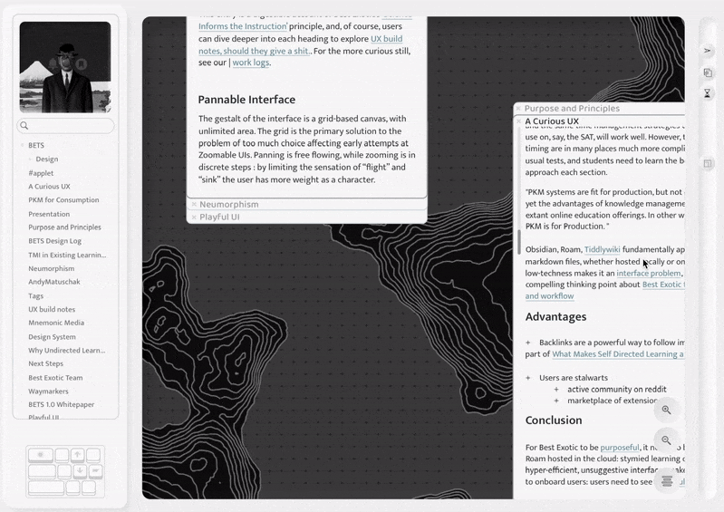
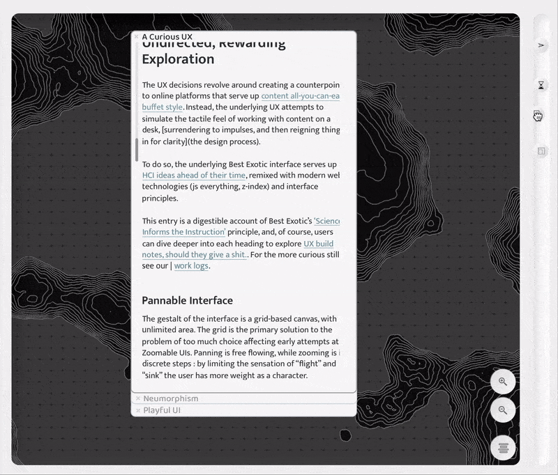
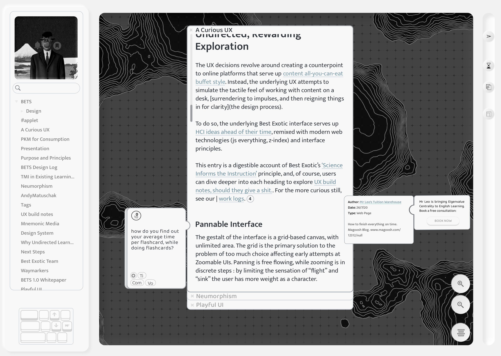

Our Philosophy
We believe that ed-tech is important, possibly more important than any of the majors players in the field now realize, but it has failed to live up to the possibilities. It is far less than we, as a society, are capable---both in terms of the numbers---completion and retention rates, actually educating kids---and in terms of pushing the boundaries of what is possible with human-computer interaction and interface design
The first generation of contemporary ed-tech entrepreneurs saw the problem as one of simply disseminating information as widely as possible. Their solution was the MOOC---popularized by sites like Coursera and Edx. Film a series of lectures, copy the quiz questions, and push it to the internet. However, it has become more and more clear as time passes that this approach was misguided. Completion rates for MOOCs were always low, and the consensus of multiple studies has been the retention rates are as well. Students simply do not learn the material.
We think that the problem with this approach is that it overemphasized the content at the expense of the tools of learning. Think about when you were last in school. Yes, there were a lot of lectures, but this was probably the least important aspect of your education. Skimming the book beforehand, taking notes, working problems, doing flashcards, the table at the cafe you always sit at---notebook, textbook, pens spread liberally across the table---this is where you did the actual work of learning the material.
Learning information is harder than consuming it. You need the tools of the trade if you are going to have a shot. This means that if ed-tech is going to move forward, it will have to bring these tools---the notebook, the flashcard, the highlighter---to the internet. The logical conclusion here is to fully decouple functionality from content. We are building a platform that is based on this basic insight.
Our Plan
Our second major insight is that if ed-tech is fundamentally a problem of functionality rather than content, it is also fundamentally a problem of design rather than engineering. Our process has been one that reflects this, always emphasizing a virtuous cycle of research → design → prototyping. Following this process for the last several months we have arrived at several key insights that we believe could lead to a revolutionary product.
1. The Infinite Canvas
Among the most confusing of the many design shortcomings was the emphasis on the linear presentation of information. Each page contains one video. In each video, the information is presented in a set order at a set speed in a set style. If you navigate to a different place, you lose your place and have to find it again. This medium strongly encourages the user to consume the information rather than to learn it. The metaphor is to the textbook.

Our solution to this problem is to present the information as draggable widgets (which we call applets) on an infinite canvas. If the MOOC is an idealized textbook, then the infinite canvas is an idealized desk. Applets that are conceptually or functionally close can be spatially close. At the same time, the medium naturally lends itself to interleaving and connecting diverse concepts.
2. The Applets
The denizens of the canvas are the applets. The most basic is the entry, which displays content. Each other kind of applet represents a kind functionality that can be used to extend an entry or another applet. One applet might generate an interactive flashcard deck to accompany an entry. Another might equip the user with a highlighter tool. Yet another might integrate with Google Docs and allow the user to take notes about the material. These are the tools of learning.

The applets allow us to truly decouple functionality from content. On another level, they provide the user with an intuitive physics of information. Each kind of functionality is really its own representation of the information in the page. When the user learns how these representations interact, they will be able to recombine them to create emergent representations of the information in the page.
A translation applet translates an entry. A flashcards applet generates flashcards. So, stacking them, we would get a translation of the flashcards. We don’t know the limits of the approach, but we are sure the potential is incredible.
3. Snap to grid, stackability, and end-user programming
By providing the user with these tools, we are essentially giving them unlimited power to rework the platform in whatever way they find most useful. This could be a lot, and so it is critical that we make them feel empowered rather than overwhelmed. Customization should feel more like a process of assembly than construction. We need to give the user just the right level of customizability, just the right number of degrees of freedom.
Our solution to this problem is to give the interface, as much as possible, the sense of snapping together; they are working with Lego’s, not wood. So, applets will snap to a grid---much like you might see on graph paper. When they are instantiated, they will appear to unfold and assemble themselves, giving the user a sense of confidence in the bond.
When new entries are opened from a link, they will appear at the bottom of a stack containing the current entry. The same applets that were attached to the parent will instantiate in the context of this applet if it is moved to the top. Again, the idea is that the user can assemble a set of applets and then use them to manipulate the attached entry.

Horizons
We are incredibly optimistic about what we can achieve with our ideas. We think the platform we develop will transform how students interact with information and present a serious challenge to legacy ed-tech. In particular, we have a few specific reasons why we believe that decoupling content from functionality in this way will scale well and provide a powerful experience as a platform and not just a set of integrated applets.
This will allow fast iteration on new functionality. The applet/entry interface means that as much as possible of the engineering and design work is done agnostic to the functionality of the given applet. This means that designing and implementing new functionality will be particularly fast.
The intuitive physics of information, if we can pull it off, will provide an incredible degree of lock in and be incredibly hard to replicate. Once the user gets a feel for how different applets interact, other products built along the same lines will feel counterintuitive---like a set of proprietary keyboard shortcuts.
This will allow our platform to scale across all the content on the internet and not just what we generate. A highlighter applet can snap to an entry dynamically generated from a Wikipedia page as quickly as it can to a bespoke article.
Home